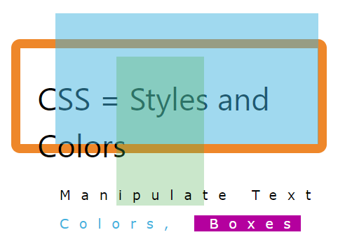

Styling HTML with CSS
CSS stands for Cascading Style Sheets.
CSS describes how HTML elements are to be displayed on screen, paper, or in other media.
CSS saves a lot of work. It can control the layout of multiple web pages all at once. CSS can be added to HTML elements in 3 ways:
Inline - by using the style attribute in HTML elements
Internal - by using a <style> element in the <head> section
External - by using an external CSS file
The most common way to add CSS, is to keep the styles in separate CSS files. However, here we will use inline and internal styling,
because this is easier to demonstrate, and easier for you to try it yourself.